Agent Platform POC
Build one ADK agent and run it on Google Cloud. Then go and look at everything that appears around it: its identity, its registry entry, the MCP servers and skill it uses, the A2A link to a second agent, and the CI/CD pipeline that deploys it. It uses the GA4 sample table and the Knowledge Catalog / OKF context from the kc-okf POC.
Architecture
Blue circles show the lesson that covers each part. Dashed lines are optional or happen automatically (the Registry entry is created when the agent is deployed, docs).
One request, end to end
By lesson 12 you should be able to follow this path in Cloud Trace.
- You ask a question in the web GUI, which calls the orchestrator on Agent Runtime.
- The Runner loads the session (and Memory Bank). Plugins run first, then the orchestrator hands work to its sub-agents:
schema_expert→sql_writer⇄ reviewer. sql_writerloads the skillga4-contextfrom Skill Registry, with rules such as "no city-level output" and "always filter on the partition".schema_expertcalls Knowledge Catalog MCP as the agent's own identity. Agent Gateway checks the egress policy, Model Armor checks the content, and IAM allows the call. It also reads a playbook from our OKF MCP server, found in Agent Registry.- The SQL goes over A2A to the separately deployed data policy agent. The Gateway checks that this agent may call that one.
- The approved SQL runs with the BigQuery tool, and the answer comes back as an A2UI table that the GUI draws.
- Every step is an event and a span (in Cloud Trace and Langfuse). Online evaluation scores the answer afterwards.
Key ideas at a glance
The big idea: an agent, an MCP server and a skill are three separate things. Each one is built, deployed, versioned and registered on its own. Identity says who is calling, IAM and Agent Gateway decide what that caller may use, and the Registry is where everyone finds them.
| Agent | MCP server | Skill | |
|---|---|---|---|
| What | Reasoning loop + instruction + tools | Service offering tools, resources, prompts | Folder of know-how (SKILL.md) |
| Ours | agents/ga4_guide | mcp_servers/okf | skills/ga4-context |
| Runs on | Agent Runtime | Cloud Run | Nothing: an agent loads it |
| Found in | Agent Registry (auto) | Agent Registry (we register it) | Agent Registry, Skills tab (we upload it) |
| .NET | A web app | A Web API | A NuGet content package |
ADK
The framework you write the agent in: agent, tools, runner, sessions, callbacks, eval.
≈ ASP.NET for agentsAgent Runtime
Managed hosting for agents, with managed sessions and Memory Bank. Formerly Agent Engine.
≈ App ServiceAgent Identity
Each deployed agent gets its own principal:// ID that you grant IAM roles to. No shared service-account keys. Without an organization the ID uses agents.global.proj-NUMBER; its token works on Google's mTLS hosts (lessons 8–9, verified).
Agent Registry
A catalog of agents, MCP servers and skills, so other agents and people can find them. Agent Runtime agents and Google's MCP servers appear by themselves; ours are registered as services (lesson 10, verified).
≈ service registry / NuGet feedAgent Gateway + Model Armor
All of the agent's outbound calls pass through it, even Gemini and sessions. An IAP guard checks each call against an access policy: which agent principal may reach which host, or which MCP tool when the server is registered in the gateway's region (CEL on destination.agent_registry.mcp_server.tool.name). Model Armor filters content. Verified: it denied a catalog call that IAM allowed (lesson 11).
Skill Registry
Skills stored in Agent Registry, with revisions and states (only Active ones download). Agents find one with search_skills and load it by name instead of shipping it with their own code (lesson 10, verified).
MCP
The standard way to plug tools and data into any agent. We use Google's hosted server and build one of our own.
≈ ODBC for agent toolsSkill
A SKILL.md folder of know-how that the agent loads only when it needs it (progressive disclosure).
Orchestrator + sub-agents
One agent splits the job and delegates to specialists, either by LLM routing (transfer, agent as a tool) or by a fixed Workflow graph, which replaces the deprecated Sequential, Parallel and Loop agents (lesson 7, verified).
A2A
Agent-to-agent protocol for agents deployed separately, each with its own identity. An agent card says what an agent can do and where to reach it.
≈ microservices + OpenAPIA2UI
The agent sends declarative UI (tables, pickers, cards) as JSON, and the app draws it from approved components. No agent code runs in the browser.
≈ Adaptive CardsADK plugin
Code registered once that runs before and after every model and tool call: logging, blocking, asking a human to confirm.
≈ global middlewareEvaluate → optimize
Offline tests, simulated users and online AI judges find failures; the prompt optimizer suggests fixes; then you re-score.
≈ tests + APM + tuning advisorTraces + Topology
Every model and tool call is a span (OpenTelemetry). Compared with LangSmith and Langfuse, Google keeps the traces in your own project. Topology needs a project inside an organization; ours has none (verified).
≈ Application Insights + App MapThree ways to build
Low-code in Agent Studio, config with the Managed Agents API (Preview), or code with ADK. All run on the same platform.
≈ Logic Apps vs YAML vs C#CI/CD
One pipeline per deployable (agent, MCP server, skill). The eval gate must pass before deploy.
≈ Azure Pipelines with a test stageGuardrails live in two places
| ADK plugin (in code, lesson 9) | Agent Gateway (on the network, lesson 11) | |
|---|---|---|
| Runs | Inside the agent process | Outside, on every outbound call |
| Owned by | Whoever deploys the agent | Platform or security team |
| Bypassable? | Yes, by changing the code | No: it denied a catalog call that IAM allowed (verified, lesson 11) |
| Good for | Logging, human approval, fixing arguments | Hard allow/deny per identity and host; per MCP tool when the server is registered in the gateway's region; Model Armor |
Lessons
Each lesson has a README in lessons/ with an explanation, code to paste and commands to run. ☁ means it creates cloud resources or costs money, so we check first.
| # | Lesson | You learn | Status |
|---|---|---|---|
| 0 | Map | The whole stack and how the pieces connect (this page) | done |
| 1 | Setup ☁ | uv, gcloud profile, ADC, APIs, quotas | done |
| 2 | First ADK agent | Agent, Runner, Session, State, Events; the adk web dev UI; first traces in Langfuse | done |
| 3 | Tools + Google's MCP | Function tools, toolsets, MCP client, Knowledge Catalog remote MCP, BigQuery tool | done |
| 4 | A skill (local) | SKILL.md, SkillToolset, progressive disclosure; OKF's okf-consume | done |
| 5 | Your own MCP server ☁ Part B | MCPServer: tools, resources, prompts; stdio vs Streamable HTTP; Cloud Run with invoker IAM (Part B, only after we agree) | done |
| 6 | Evaluate: offline + simulated | adk eval on 5 of kc-okf's questions (trajectory, reference and rubric metrics, Gemini as judge); a simulated NOVICE user | done |
| 7 | Multi-agent in one app | ga4_team (transfer + AgentTool reviewer) and ga4_flow (a Workflow graph with a review loop; Sequential/Loop agents are deprecated); scored with lesson 6's eval set | done |
| 8 | Deploy to Agent Runtime ☁ | adk deploy agent_engine of a clean build copy (skill inside, no Langfuse key), Agent Identity, scale to zero; the deliberate first 403 | done |
| 9 | Identity, IAM, guardrails in code ☁ | Least-privilege roles for the agent principal (one 403 at a time); a GuardrailsPlugin that logs tool calls, blocks write and city-level SQL, asks before a full-table scan, and stops retry loops | done |
| 10 | Registry: agents, MCP servers, skills ☁ | Enable Agent Registry (free); find the auto-registered agent and Google's MCP servers; register our MCP server (tool spec) and skill; ga4_registry finds its skill and catalog tools in the registry | done |
| 11 | Agent Gateway + governance ☁ | Preflight first (early preview access? organization?); egress gateway, default deny, a Unified Access Policy that blocks one MCP tool for our agent's principal; DRY_RUN then ENFORCED; Model Armor | done |
| 12 | A2A between agents ☁ | Lesson 7's reviewer as its own agent behind A2A (agent card, to_a2a, RemoteA2aAgent), first locally; later deployed with its own identity, found in the Registry | ready |
| 13 | Memory ☁ | Session vs Memory Bank (optional) | planned |
| 14 | Web GUI ☁ | A chat page with login on Cloud Run calling the deployed agent; Gemini Enterprise app compared | planned |
| 15 | A2UI ☁ | Results as an A2UI table, a picker for ambiguous questions; AG-UI and MCP Apps compared | planned |
| 16 | Observability: Google vs Langfuse ☁ | OpenTelemetry, Cloud Trace, Topology; the same multi-agent trace in Langfuse, compared span by span (agent, model, tool and MCP calls, tokens, A2A hops) | planned |
| 17 | Optimize ☁ | Online evaluation with AutoRaters; Google's optimizer vs adk optimize (GEPA); re-score | planned |
| 18 | Three ways to build ☁ | Agent Studio vs Managed Agents API vs ADK (optional) | planned |
| 19 | CI/CD for the deployables ☁ | A pipeline each for agents, MCP server and skill; eval gate; WIF; update vs re-create; rollback | planned |
| 20 | Tour: what ended up where | Console and gcloud views of every piece; gateway decisions, threat scanning | planned |
| 21 | Score, cost, clean up ☁ | Setups D (single) and E (multi-agent) against kc-okf's A–C; cost; delete resources | planned |
| 22 | Same agent in LangGraph | The lesson 3 agent rebuilt in LangGraph; mapping to ADK concepts; same Gemini, project and Langfuse; same 5 questions scored (optional, after lesson 5) | planned |
| 23 | Caching and cost | Three places to cache: data in our MCP server, tool results in session state, and the model's input (Gemini implicit caching vs ADK's ContextCacheConfig); measure cost, latency and score on lesson 6's evalset (after lesson 6) | planned |
Left out on purpose: RAG Engine and Vector Search (our data is a structured table), Code Execution (we run SQL, not Python), CodeMender and AI Content Detection (not about data agents). Details are in docs/lesson-plan.md.
Learning journal
What we did in each lesson, what we found, and the questions asked along the way, with the answers in plain words. It's written to be re-read later without the chat. Click a lesson to open it, or use the buttons to open or fold all of them. Evidence for every verified claim is in results/.
Next session (prepared on 2026-11-27)
- First, cost: the Agent Gateway
ga4-egressis still running (price not published, maybe per hour). Turn it off with lesson 11's Part E, then look at Billing → Reports (group by service, then SKU). - Lesson 12, A2A: the reviewer from lesson 7 as its own agent. Part A runs locally: terminal A serves
sql_revieweron port 8001, terminal B runsadk webwithga4_a2a. Two questions at most (~$0.15–0.30 each, guess). - Cost rules (lesson plan): estimate evals before running them, 1 run by default; delete per-hour resources at the end of each session. The $20 project budget only warns.
- Each terminal tab: set
ID=7105399555822190592,R=...,P=...before cloud commands. Problems and fixes: Troubleshooting.
Lesson 0The map2026-11-24done
The basics
What this project is. A hands-on tour of Google's agent stack. We build one small agent that answers questions about a Google Analytics sample dataset, then look at everything that appears around it on Google Cloud: its identity, the registry, MCP servers, skills, evaluation and tracing.
The four parts of Google's Agent Platform (the 2026 name for Vertex AI):
- Build: what you make agents with (ADK, skills, models).
- Scale: where agents run (Agent Runtime, managed sessions, memory).
- Govern: who an agent is and what it may do (Agent Identity, Agent Registry, Agent Gateway).
- Optimize: how you know it works (evaluation, traces, prompt tuning).
Words you'll meet first
| Term | Plain meaning | First used |
|---|---|---|
| Agent | A model in a loop: it reads the context, picks a tool, sees the result, and repeats until it can answer | Lesson 2 |
| Session | One conversation, with its events and saved state | Lesson 2 |
| Trace | A record of every model and tool call, so you can see what happened | Lesson 2 |
| Tool | A function the agent can call to do something or fetch data | Lesson 3 |
| MCP | A standard way for a server to offer tools to any agent | Lesson 3 |
| Skill | A folder of written know-how the agent reads when it needs it | Lesson 4 |
How we work. Each lesson has a README in lessons/ with the explanation, the code and the commands. You run them and send me the output; I read your files and the traces, check the results, and update this page. Every claim is labelled verified (we ran it), docs (Google's documentation says so) or guess (not checked); see "How claims are labelled" at the bottom.
What we did
- Wrote this page: the architecture diagram, the request flow, the key ideas, the lesson plan (lessons 0 to 21, plus an optional lesson 22) and the glossary.
Questions and answers
What makes up Google's "Agent Platform"?
Gemini Enterprise Agent Platform (the new name for Vertex AI, 2026) has four pillars. Build: ADK, Agent Studio, Managed Agents API, Skill Registry, Model Garden. Scale: Agent Runtime, Sessions, Memory Bank, Code Execution. Govern: Agent Identity, Agent Registry, Agent Gateway, Model Armor. Optimize: evaluation, prompt optimizer, traces and Topology (docs).
Is Skill Registry a Google service?
Yes, a Preview part of Agent Platform: a private, versioned store for skills. An agent loads a skill from it instead of shipping the skill inside its own code (docs; lesson 10).
Can a plugin be deployed or registered by itself too?
No. An ADK plugin is code that runs inside the agent's process (like middleware). It ships with the agent. Agents, MCP servers and skills are the three things that are deployed and registered on their own.
Is "Optimize" like LangSmith for LangChain?
Roughly, yes: evaluation, traces and prompt optimization in one place. The difference is that Google keeps the data in your own GCP project. Langfuse is the open-source, self-hostable equivalent; we compare them in lesson 16.
Remember this
- An agent, an MCP server and a skill are three separate things, each built, deployed and registered on its own.
- Identity says who is calling; IAM and the Agent Gateway decide what it may use.
- Every claim in this repo is labelled verified, docs or guess.
Lesson 1Setup2026-11-24done
The basics
This lesson was plumbing. Before an agent can think, your machine needs a login that Google's libraries can use, a project to bill the calls to, and the right APIs switched on. We set that up and made one Gemini call to prove it works.
What we did
- Selected the
kc-okfgcloud profile, checked ADC and its quota project, confirmed the three APIs (aiplatform,dataplex,bigquery) were already on. uv init+uv add google-adk[...] google-cloud-aiplatform[...]: 134 packages, ADK 2.15.0, aiplatform 2.10.0.- One Gemini call answered
setup ok(gemini-3.5-flashon locationglobal).
Key ideas
- Two logins:
gcloud auth loginis for the CLI;application-default login(ADC) is what libraries such as ADK use. Likeaz loginvsDefaultAzureCredential. - Quota project: the project that pays for, and is rate-limited on, library calls.
- APIs are switched on per project. Each later lesson turns on only what it needs, so you see which feature needs which service.
- Google Cloud path, not an API key, because Agent Identity, IAM and audit logs only exist on that path.
Questions and answers
Where is the "Vertex AI API"? The console home page doesn't show it.
The "Welcome to Gemini Platform" page is the product console. The API switch and its traffic graphs live under APIs & Services → Enabled APIs, as aiplatform.googleapis.com. Its Metrics tab showed our GenerateContent call.
Remember this
- Two logins:
gcloud auth loginis for the CLI, ADC is for libraries like ADK. - APIs are switched on per project; each lesson turns on only what it needs.
- We use Google Cloud, not an API key, because identity, IAM and audit logs only exist there.
Lesson 2First ADK agent2026-11-24 → 2026-11-25done
The basics
An ADK agent is just a Python object: a name, an instruction and some tools. It does nothing until a Runner runs it. adk run, adk web and our own script are three different hosts for the same agent; they differ only in how you talk to it and where the conversation is saved. Langfuse shows every model call.
What we did
adk createmadeagents/ga4_guide/; we replacedagent.pywith an agent that has one tool,remember_analyst, andoutput_key="last_answer".- Chatted with it in the terminal (
adk run) and in the browser dev UI (adk web): Events, State, Trace and the agent graph. - Opened the sessions file
.adk/session.dbwithsqlite3and read every table. - Wrote
scripts/runner_demo.py: our own Runner with in-memory sessions. Turn 1 calledremember_analystand changed theuser:keys; turn 2 made no tool call and refused to invent a number; the session had 6 events; a new session for the same user started with onlyuser:analyst_nameanduser:team. State scoping, seen in our own code (verified). - Pointed the script at our own Langfuse (three
OTEL_*lines in.envplus a few lines inagents/ga4_guide/__init__.py; see lesson 3 for why). Two traces appeared with the spansinvoke_workflow → invoke_agent → generate_content → remember_analyst → generate_content, token counts and cost. At first no prompt text appeared; two more.envlines (OTEL_SEMCONV_STABILITY_OPT_IN=gen_ai_latest_experimental,OTEL_INSTRUMENTATION_GENAI_CAPTURE_MESSAGE_CONTENT=SPAN_ONLY) fixed it. On thegenerate_contentrows we then saw the system prompt with an empty name before the tool ran and Priya after it (verified).
The big picture: one agent class, many hosts
The agent is the controller; the Runner is the ASP.NET pipeline that runs it. Whoever creates the Runner decides where conversations are stored. On Agent Runtime, Google's AdkApp wrapper creates the Runner and uses the managed Sessions service (docs).
What the Runner does on each message
- Loads the conversation (session) from its storage.
- Sends the instruction, the conversation so far and your new message to Gemini.
- If Gemini asks for a tool (
remember_analyst), runs that Python function and sends the result back. - Repeats until Gemini gives a final answer.
- Saves every step as an event, and every state change with it.
- Hands each event to whoever called it, as it happens (terminal, browser, your script).
Where the data lives: state scopes are real tables
| Key in code | Table in session.db | Lasts for |
|---|---|---|
user:analyst_name, user:team | user_states, one row per app + user, saved without the prefix | All of that user's conversations |
last_answer, times_remembered (no prefix) | sessions.state, one row per conversation | This conversation only |
app:… (not used yet) | app_states | Everyone using the app |
temp:… (not used yet) | not stored | This turn only |
| every message, tool call and tool result | events, JSON in event_data | The conversation (deleted with it, ON DELETE CASCADE) |
Findings (verified)
adk runandadk webboth write to.adk/session.db, but as different users (test_useranduser). That's why the web UI didn't know the name given in the terminal.- State changes are events. The
user:keys appear in thestate_deltaof the tool result event;last_answerchanges on every model reply. adk webstores the session's display name in state (__session_metadata__.displayName, taken from the first message).- Data survives restarts: SQLite is a file.
- Without the catalog, the model guesses the schema. Two runs gave two different SQL suggestions; one used
_TABLE_SUFFIX, which is wrong for our partitioned table. Lessons 3–4 fix that. - ADK sends OpenTelemetry spans to any OTLP address set in
OTEL_EXPORTER_OTLP_*, so our self-hosted Langfuse (v3.225.8, port 3000) can show the runs with no extra package.
Questions and answers
What is the adk web UI?
ADK's developer UI: a small local web server that runs your agent and shows each step. Events (every message and tool call), State (the keys), Trace (timings) and a graph of agent → tools. It's for development, not for end users (lesson 14 builds a real one).
Where was the analyst name saved, from the terminal or the web app?
In both cases, in the same SQLite file agents/ga4_guide/.adk/session.db, table user_states, but under different user IDs. Nothing was saved in Google Cloud.
What does output_key="last_answer" mean?
"After every reply, also save the reply text into session state as last_answer." Nothing reads it yet. In lesson 7 one agent writes with output_key="draft_sql" and the next reads it with {draft_sql} in its instruction: that's how sub-agents pass work along. Like Session["last_answer"] = result at the end of an action.
Is SQLite open source? Can I query it after the app stops?
It's public domain, a whole database in one file, with no server, and it's built into Python, phones and browsers (like SQL Server LocalDB, only lighter). Yes: open it read-only with sqlite3 -readonly -box agents/ga4_guide/.adk/session.db. The queries are in the Lesson 2 README, Step 4b.
Why write runner_demo.py at all?
So far we only used ADK's ready-made apps (adk run, adk web). Eventually your program (a website, a test) has to talk to the agent. The script is the smallest such program: make a session, send a message, print what comes back. It's like driving an automatic, then trying a manual once.
Is the script an HTTP client calling the agent?
No. It imports the agent as Python code and runs it in its own process: a project reference to a class library, not HttpClient. HTTP comes when the agent is deployed (lesson 8) and a web app calls it (lesson 14).
Is the agent a server that gets started and killed for each question?
Locally, no: the agent is just an object, and nothing runs between messages. Each message is a loop of calls to Gemini. On Agent Runtime there is a server: Google runs a container that holds your agent and a Runner and stays up, waiting for HTTP requests.
What is the Runner?
The engine. The agent only describes what to do (name, instruction, tools); the Runner does it: load the session, call Gemini, run tools, save events, hand them back. Runner(agent=root_agent, ...): the Runner holds the agent; the agent doesn't know about the Runner. That's why the same agent works in every host in the diagram.
Does adk run also use a Runner?
Yes. adk run, adk web and our script all create a Runner. They differ only in how you talk to it and where it stores sessions.
What is InMemorySessionService?
The simplest session storage: an ordinary Python dictionary in RAM, forgotten when the script ends. The SQLite file isn't touched. The agent never chooses its storage; whoever runs it does. Like Entity Framework's InMemory provider vs SQL Server: same code, one line decides.
What are GOOGLE_GENAI_USE_ENTERPRISE and noqa?
GOOGLE_GENAI_USE_ENTERPRISE=1 picks the Gemini "door": Google Cloud with your ADC login and IAM (set), or AI Studio with an API key (not set). We use Cloud, because identity and governance only exist there. noqa: E402 tells the linter "this import is late on purpose": it must come after load_dotenv and sys.path.insert. It does nothing at run time (like #pragma warning disable).
Langfuse shows LANGFUSE_* variables, you gave me OTEL_* ones. What's the difference?
Same keys, different carrier. LANGFUSE_* are read by Langfuse's own Python package (not installed). OTEL_* are the open OpenTelemetry settings that ADK already understands: endpoint = where to send spans, headers = the login (Authorization: Basic base64(public:secret), so both keys), service name = a label. We used OTel, so nothing new was installed.
Do we change agent.py for tracing?
No. The agent doesn't know who watches it. ADK already creates a span per model and tool call; the host decides where they go. Tracing is switched on by the package's __init__.py (for adk run and scripts) and by adk web itself when the settings are in the shell; on Agent Runtime it goes to Cloud Trace (lesson 16). Start ADK through scripts/adk.sh.
Langfuse only shows "invoke" names, and no prompt or reply. Is that right?
Names: yes, mostly. ADK 2.x runs every agent as a graph workflow, so invoke_workflow and invoke_agent wrap the Gemini calls and the tool call, matching the events in the terminal. Text: at first it was missing, because ADK 2.15 sends message text as log events and we only export traces. Two settings fix it: OTEL_SEMCONV_STABILITY_OPT_IN=gen_ai_latest_experimental and OTEL_INSTRUMENTATION_GENAI_CAPTURE_MESSAGE_CONTENT=SPAN_ONLY. Then click the generate_content row (not the top row) to see the prompt and the reply (verified). The top rows still show null.
What does the model actually receive?
Seen in Langfuse: the instruction text, with {user:analyst_name?} and {user:team?} already filled in from state, plus the conversation. Before remember_analyst runs it reads (team: ); the very next model call reads Priya (team: merch analytics). The instruction is rebuilt for every model call.
At work I installed the Langfuse SDK instead. Is that different?
Yes. The langfuse package (three LANGFUSE_* variables plus an import) captures the text itself. ADK's own OpenTelemetry spans need no new package but need the two content settings above. Both reach the same Langfuse.
Would a web app do the same as the script?
Either A: the web app imports the agent and runs its own Runner, exactly like the script (that's what adk web is); or B: the agent is deployed on Agent Runtime and the web app calls it over HTTP, and Google's server runs the Runner. We do A now and B in lessons 8 and 14.
Remember this
- The agent describes what to do; the Runner does it.
- State keys: no prefix = this conversation,
user:= this user across conversations,app:= everyone,temp:= one turn. - Tracing is the host's job, not the agent's. The agent code doesn't change.
Lesson 3Real tools: Knowledge Catalog MCP and BigQuery2026-11-25done
The basics
Tools are how an agent does things instead of guessing. We gave it two toolsets: Google's hosted Knowledge Catalog (read the table's real schema) and BigQuery (run read-only SQL). MCP is the standard protocol a server uses to offer tools to any agent.
What we're doing
- Give
ga4_guidetwo toolsets: Google's hosted Knowledge Catalog MCP server (read the table's real schema) and ADK's BigQueryToolset (run read-only SQL). Then ask the same December question as in lesson 2 and compare. - Lesson text: lessons/03-tools-and-mcp.
Facts checked before the lesson (verified 2026-11-25)
- The hosted server
https://dataplex.googleapis.com/mcpanswered through ADK'sMcpToolsetwith our ADC token, and offers 15 tools: 8 that read (search_entries,lookup_context,lookup_entry,lookup_entry_links,list_entries,get_glossary,get_operation,get_entry_group_iam_policy) and 7 that change things (create/update/delete entries, entry groups, links, andset_entry_group_iam_policy). We give the agent 3 of them withtool_filter. lookup_contextis described as "designed to be called afterSearchEntries" and returns LLM-ready YAML: schema, data quality, usage statistics.- ADK's BigQuery toolset has 11 tools;
write_modedefaults toBLOCKED(SELECT only). We add a 1 GB per-query cap and a 50-row result limit. - The table: 4,295,584 rows, 3.6 GB, partitioned by
event_date_dt(day), not sharded. A partition-filtered December purchase count reads about 34 MB (a free dry run), roughly $0.0002. - The
mcppackage 2.x renamed its low-level client function, so we go through ADK'sMcpToolset.
Key ideas
- Function tool vs toolset vs MCP: a function is one tool; a toolset produces many; MCP is the standard protocol a server uses to publish tools to any agent.
tool_filteris the cheapest guardrail: the agent never learns the hidden tools exist. Lessons 9 and 11 add guardrails in code and on the network.header_provideradds a fresh token before every MCP call, so it never goes stale.
Results (verified)
- The December question:
search_entries→lookup_context→execute_sql→ 2,434 purchases, SQL filtered onevent_date_dt. An independentbq querygave the same 2,434. In lesson 2 the same question got "I can't access the data" and a wrong_TABLE_SUFFIXguess. - The order is search → look up → run:
search_entriesfinds the table's catalog address (it returned the table and its dataset),lookup_contextreads about it (about 35,500 characters of YAML),execute_sqlruns the query. The instruction asked for that order; nothing forces it. - The cost of grounding: 5 model calls, 30.8 s, about $0.10 per question (Langfuse's estimate). The big catalog result stays in the conversation, so two model calls carried 31,000+ input tokens, and even a later "Hey" cost 32,767.
- The guardrail that costs nothing: asked to delete the catalog entry, the agent said it can't; it has no such tool. No tool was called.
- The catalog already carries business rules: the table's context includes the rule "report financial figures with the
_in_usdcolumns" (MSC-417), and the agent quoted it. - Tracing needs care:
adk webreads the tracing settings at startup from the shell, andadk runhas no tracing code. Fix: setup inagents/ga4_guide/__init__.pyplusscripts/adk.sh, which loads.envfirst. Always start ADK through it.
Questions and answers
Is the function tool different from a toolset? Why is one a "server"?
All three look the same to the model: a tool with a name, a description and inputs. The difference is where the code runs. remember_analyst is your own function. BigQueryToolset is a bundle of ready-made Python functions that run in your process and then call the BigQuery API. McpToolset is only the client: you give it an address, it fetches the menu from Google's MCP server, and the server runs the tool. Only that one crosses the network.
We use 3 of the 15 tools. Do we copy them?
No. Nothing is copied or converted; the tools keep running at Google. tool_filter only decides which menu items the agent may see. The hidden ones (delete_entry, set_entry_group_iam_policy, …) can't be ordered by an agent that doesn't know they exist.
Why isn't BigQuery also an MCP server?
It is: Google hosts one at bigquery.googleapis.com/mcp (9 tools, verified). ADK's library toolset came first or serves ADK only, and it has extras (forecast, ask_data_insights). We use the library here and switch to the hosted server in lesson 11, because Agent Gateway can govern MCP calls but not a function inside your own process (docs).
Why was the Langfuse row for MCP send tools/list empty?
It's protocol plumbing (asking the server for its menu). The prompt and results are on the generate_content and tool rows.
Is search_entries the call that lists all tables?
No. The agent already knew the table name from its instruction, so it searched for that one table to get its catalog address. lookup_context then returned the details. With many similar tables the agent would have to choose among the results; our instruction doesn't tell it to ask the user.
Text: lessons/03-tools-and-mcp · evidence: results/03-tools-and-mcp.md.
Remember this
tool_filteris the cheapest guardrail: the agent never learns the hidden tools exist.- The order is search, then look up, then run the SQL.
- Grounding has a price: about $0.10 per question here, mostly the catalog text resent on every model call.
Lesson 4A skill2026-11-26done
The basics
A skill is a cheat sheet in a folder: written rules the agent reads before it acts. Ours holds the rules for querying the table (use the partition date column, wrap refunds in IFNULL, drop the last 3 days, never show city names). The main point is that the agent behaves the same way every time.
What we're doing
- Write the rules for querying our table (use
event_date_dt, wrap refunds inIFNULL, drop the last 3 days, never show city names) into a skill (skills/ga4-context/): a cheat sheet the agent reads before it writes SQL. Then check whether it behaves the same way every time and what it does to cost. Each question was run 3 times, before (lesson 3 agent) and after (with the skill). - Lesson text: lessons/04-skill. Evidence:
results/04-skill.md.
Key ideas
- Skill = knowledge, not an action. A function or MCP tool does something; a skill puts text in the prompt. Nothing runs.
- Progressive disclosure, three levels: name + description (always in the prompt, 314 characters), the
SKILL.mdbody (when the agent callsload_skill, 1,658 characters), reference files (only when it callsload_skill_resource, about 1,000 each). For comparison, lesson 3's catalog result was about 36,700 characters, sent twice. - The description is the trigger. It's all the model sees until it loads the skill, so it says what the skill is and when to use it.
namemust equal the folder name (verified in the loader). SkillToolsetoffers 4 tools:list_skills,load_skill,load_skill_resource,run_skill_script. We hide the last one withtool_filter: a skill can carry code, and we don't need that. ADK also adds a block to the system prompt telling the model it must load a relevant skill (verified).
Facts checked before the lesson (verified 2026-11-25)
- The rules come from the earlier kc-okf POC's catalog pages. I checked them against the table before putting them in a skill: 92 days from 2020-11-01 to 2021-01-31; 308,695 rows with
source = '(data deleted)'; and all 5,692 purchase rows have a NULLrefund_value_in_usd, soIFNULLis essential (without it, revenue minus refunds is NULL). - The "72-hour finality, drop the last 3 days" rule is a policy: the data shows no gap in those days. The skill labels it as policy.
- The lesson's code was extracted into a scratch copy and tested: the skill loads, the agent builds with 9 tools, both SQL snippets validate with a free dry run.
- Found while preparing: the catalog's
lookup_contextresult contains the same 36,700 characters twice (contentandstructuredContent), and both go to the model. A lesson 9 plugin could strip one.
Results (verified, from Langfuse, 2026-11-26)
| Lesson 3 agent | With the skill | |
|---|---|---|
| Daily revenue: drops the last 3 days (3 runs each) | 0 of 3: the catalog text had the rule, the agent ignored it | 3 of 3, and says why |
| Top cities: shows city names | 1 of 2 partial attempts ran SQL by geo.city | 0 of 3 (+ 1 of 1 on "names of the cities that spent the most") |
| Daily revenue: model calls / biggest input | 6 / about 35,000 tokens | 4 / about 12,500 tokens |
| Daily revenue: cost per question | about $0.13 | about $0.06 (-52%) |
| Top cities: cost per question | $0.065 (one run, not comparable) | $0.062 to $0.106 |
| Catalog calls | every run | none |
- The skill made behavior repeatable. Same date limit, same refund handling, and
load_skillbefore any SQL in all 7 clean runs. The baseline was consistently wrong on the 3-day rule, not random, which one run could never show. - It also cut cost on the revenue question, because the agent read about 2,200 characters of skill text instead of the catalog's roughly 75,000 characters in the conversation. Time did not clearly improve (one run took 53.5 s).
- Not every question got cheaper. The cities question made 5 to 7 calls, because the agent looked up the table schema and sometimes ran a second query. The skill saves most where it replaces the catalog lookup.
- The 72-hour rule leaked. In 2 of 3 cities runs the agent also dropped the last 3 days from a plain purchase count, where the rule wasn't meant to apply. The wording needs tightening (guess: "revenue figures only" fixes it).
- A skill is knowledge, not a guard. It made the model follow our rules, but nothing blocks a bad query. Hard guarantees come from code-level guardrails (lessons 9 and 11).
- Rate limits: Vertex returned
429 RESOURCE_EXHAUSTEDon many big calls (about 35,000 tokens each), not an auth problem. It came and went; a retry setting on the model would help (idea, not tested).
Questions and answers
Isn't a skill about repeatable behavior? Why did the lesson talk about cost?
Yes, repeatable behavior is the main point: the same notes, applied the same way on every question. Cost is a side effect we measured. The lesson now leads with repeatability and runs each question 3 times.
What are "the rules" in the skill?
Notes about how to query our table correctly, which the model can't know alone: filter on event_date_dt; the data spans 2020-11-01 to 2021-01-31; use the USD revenue columns and wrap refunds in IFNULL (they are empty on every purchase row); a day is final 72 hours after it ends (a policy), so drop the last 3 days for daily or "final" figures; exclude '(data deleted)' for traffic sources; never show city or metro, and don't export user_pseudo_id; read nested arrays with UNNEST. Think of a new employee's cheat sheet.
Which level of a skill is always in the prompt, and why does the description matter?
Level 1: name and description (314 characters). It's all the model sees before it decides to load the skill, so a vague description means the skill never gets loaded.
Skill vs MCP tool?
A skill is text that enters the prompt: knowledge, nothing runs. An MCP tool runs code on a server and returns a result: an action.
Why filter out run_skill_script?
A skill can carry code, and we don't need that. It's the same idea as lesson 3's tool_filter: the agent never learns about a tool it doesn't need.
Why must name equal the folder name?
ADK's loader checks it (verified), so a skill can be found by one stable name.
Why label the 72-hour rule as a policy?
The data shows no gap in the last days, so nobody can verify the rule from the table. "Policy" tells readers who owns it and stops us claiming the data proves it.
Why run each question 3 times?
One run can't show whether behavior repeats. The baseline missed the 3-day rule 3 of 3 times and the skill got it right 3 of 3; a single run each could have hidden both patterns.
Is "Resource exhausted" a credentials problem?
No. The tool call before it worked, and tiny Gemini calls with the same credentials returned 200. A 429 means rate limit or capacity; an auth problem is a 401 or 403.
Text: lessons/04-skill · evidence: results/04-skill.md.
Remember this
- Repeatable behavior first, cost second: the revenue question followed the 3-day rule 3 of 3 times with the skill vs 0 of 3 without, at about half the cost.
- A skill is knowledge, not enforcement. Hard guarantees need code-level guardrails (lessons 9 and 11).
- The
descriptiondecides whether the skill is ever loaded.
Lesson 5Our own MCP server2026-11-26done
The basics
In lesson 3 we used other people's MCP servers. Now we write one: a small program that serves the catalog's pages about our table (the ones Knowledge Studio wrote) by name, reading them live from Knowledge Catalog, so any agent can fetch them, not just one that carries the skill folder. A server offers three kinds of things: tools (the model chooses), resources (the application attaches) and prompts (the user picks).
What we're doing
- Build
mcp_servers/okf/server.pywith three tools (list_pages,get_page,search_pages), a resource templateokf://pages/{name}and one prompt. Run it over stdio (a client starts it as a child process) and over Streamable HTTP (it listens on port 8808). Then a small agent,okf_guide, uses only this server. - Lesson text: lessons/05-own-mcp-server. Evidence:
results/05-own-mcp-server.md. The Cloud Run part (Part B) is written as a plan only; we run it after we agree.
Facts checked before the lesson (verified 2026-11-26)
FastMCPis nowMCPServer. In the installedmcp2.3.0,mcp.server.fastmcpno longer imports and says so; the class ismcp.server.mcpserver.MCPServer. No new package is needed (it came with ADK).- The server's code was tested in a scratch copy: three tools listed and called over stdio and over HTTP; the resource template and the prompt work;
okf_guidecalledget_pageand answered with the page names as sources. - The duplicate copy comes from the server SDK. By default a tool result carries the same data twice (
contentandstructuredContent), as we saw with Google's catalog in lesson 3. With@mcp.tool(structured_output=False)the copy is gone (counted: 0 left). When we write the server we control this; on Google's hosted server we can't. - Reading the pages live works with our login. One REST call lists the context set's 8 pages; one call per page (
view=ALL) returns its Markdown from theoverviewaspect. Pages are 288 to 8,038 characters, far less thanlookup_context's 36,700 (sent twice). - First test run of
okf_guide: question 1 took 8 calls (list_pages, 3search_pages, 4get_page, results 1,663 to 8,171 characters) and answered from the live pages.
How the pieces fit (from the kc-okf POC)
BigQuery table ga4_sample.events
│ Google creates the entries itself
▼
Knowledge Catalog
├─ @bigquery: dataset + table entries (schema only; 0 of 24 columns described)
└─ context set ga4-merch-context (Studio's pages, approved by a reviewer)
│ │
│ kcmd pull (a copy) │ read live (our Lesson 5 server)
▼ ▼
OKF files on disk okf_guide agent
(kcmd mcp serves them;
they drift)
Questions and answers
What happened (verified 2026-11-26)
| Step | Result |
|---|---|
| 1. List the pages | 8 entries in the context set, all made in the kc-okf POC (Studio, plus the hand-written playbook pushed with kcmd push). Nothing in this lesson creates entries. |
| 3. stdio | 3 tools; search_pages('72') found the 72-hour rule on the events page and the metrics page; result parts ['content', 'isError']. |
| 4. HTTP | Same output on port 8808. "All connection attempts failed" meant the server wasn't running yet: start it first. |
| 5. Duplicate copy | With @mcp.tool() the count was 1 (structuredContent appears); with structured_output=False it's 0. |
| 5b. Cache | Off: 2.00 / 1.69 / 1.59 s. 60 s cache: 1.87 / 0.00 / 0.00 s. |
| 7. okf_guide | 7 tool calls (list, 2 searches, 4 pages), 8 model calls, $0.059; correct answer citing the pages. ga4_guide on the same question: 3 to 6 tool calls, $0.049 to $0.096, correct, no sources. |
- Small menu, small start. okf_guide's first model call was 475 tokens; ga4_guide's was 9,658 (long instruction, four toolsets).
- Gemini caches repeated input by itself. ga4_guide's later calls each had about 7,200
input_cached_tokens(its instruction and tool definitions), billed at a lower rate (docs). So gemini-3.5-flash does implicit caching: a head start for lesson 23. - okf_guide read more than it needed: all 4 pages after its searches. A tighter instruction could cut that (not tested).
Does Studio fill in the column descriptions on the table entry?
No (verified). Even when asked to, it wrote the column meanings as text in its pages and left 0 of 24 columns described on the BigQuery table entry. The table entry mirrors BigQuery; the pages live in the context set and link to the table. Why Google designed it that way is a guess: real column descriptions belong in BigQuery.
What do kcmd and OKF do, and why read the catalog live instead?
kcmd pull copies the pages to disk as OKF files (Markdown with a header), kcmd push writes edited files back without the reviewer (verified), and kcmd mcp serves the copy on disk, not the catalog. A copy drifts as soon as someone approves a change in Studio. Our agents have a Google login, so reading the catalog live gives one source of truth.
Then why do kcmd and OKF exist at all?
Mostly a guess: for agents that can't reach Google, for editing pages like code (editor, Git, bulk push), to save tokens (files used about a third of MCP's tokens, verified in kc-okf), and for an open format that any vendor's tools can read.
Where does caching fit?
In three places. Data: our server can keep a page for a few seconds (lesson 5, Step 5b: a repeated search went from about 2 s to 0.00 s, verified), at the price of a page being up to that old. Tool results: an agent can keep a fetched page in session state for the rest of the conversation. Model input: Gemini can reuse the repeated start of a long prompt at a lower price; that's where the money is (lesson 4's biggest input was about 35K tokens, resent on every call). Lesson 23, taken after lesson 6, measures the last two.
Google's catalog server already has tools for this. Why write our own?
Mostly to learn the server side. Google's 15 tools can probably fetch a page too (guess, not tested). Ours adds a smaller menu (3 tools for one job), control over the output (no duplicate copy), and something of our own to deploy, register and guard later (lessons 10 and 11). In real projects you write one when the data has no ready-made server.
Which functions in server.py are MCP tools?
Only the decorated ones. @mcp.tool, @mcp.resource and @mcp.prompt register a function; its name, docstring and type hints become what clients see. _get, _page_names and _read have no decorator: helpers that clients never see. A server can offer tools, resources and prompts, plus an instructions note.
Where does the cache live, and can we cache Google's server?
In our server's process memory, between the server and the catalog API. With stdio each client starts a fresh process, so the cache starts empty; an HTTP server keeps it while it runs and shares it with every caller. For someone else's server you can only cache on your side: an ADK callback or plugin, or session state (lesson 23).
Does adk web agents start every agent?
It starts one web server that lists every agent folder and loads an agent when you first use it. The dropdown picks which one gets your message. Our first question went to ga4_guide by mistake because it comes first alphabetically.
Is okf_guide reading local files?
No. Each get_page goes agent → our server (port 8808) → Knowledge Catalog, and comes back with the approved page. ga4_guide's skill is the copy; okf_guide's pages are live.
Why build an MCP server when we already have a skill?
A skill only helps an agent that carries the folder. An MCP server serves the same pages to any agent, and a page can change without redeploying the agents. It's also the piece that gets deployed, registered and guarded on its own later.
stdio or HTTP?
stdio: the client starts the server as a child process and talks through its input and output. No port, no login, private to one machine. HTTP: the server runs by itself at a URL and many agents can share it, so it must be secured (Part B).
Text: lessons/05-own-mcp-server · evidence: results/05-own-mcp-server.md.
Remember this
- An MCP server is a program that offers tools (the model picks), resources (the app attaches) and prompts (the user picks). A decorator is what makes a function visible.
- stdio: the client starts the server. HTTP: you start it first, and then it must be secured.
- Read the source of truth live; a copy (skill,
kcmd pull) drifts. A short cache is drift with a known limit. - The duplicate
structuredContentis a server setting: ours is off, Google's we can't change.
Lesson 6Evaluate the agent2026-11-26done
The basics
An evaluation is a test suite for an agent. You write each question with a good answer once; adk eval runs the agent and scores each answer from 0 to 1 against a threshold. Because answers are free text, some checks use another model as the judge. A simulated user is a model that plays the user for a whole conversation, following a plan.
What we're doing
- Part A: 5 questions from the kc-okf POC (3 need a policy rule) in
eval/ga4_questions.evalset.json, scored on the tool path (load_skillthenexecute_sql), a reference answer and rubrics. - Part B: one simulated
NOVICEanalyst asking for January revenue, then by city. - Lesson text: lessons/06-evaluate. Evidence:
results/06-evaluate.md.
Facts checked before the lesson (verified 2026-11-26)
- Part A test run: 4 of 5 passed.
q11(engaged sessions) failed: the agent used GA4's ownsession_engagedflag (111,119) instead of the policy definition (106,301), and also dropped the last 3 days from a session count. Its tool path still passed: right tools, wrong meaning. - Rubrics need
"type": "FINAL_RESPONSE_QUALITY", or the rubric metric reportsNOT_EVALUATED("Rubrics are required."). - Part B test run failed: task success 0.71, simulator quality 0.5. The simulator asked two things in one turn, so it was graded down too.
- About $0.80 for both parts (Langfuse); eval runs show up in Langfuse as
invoke_workflow ga4_guidetraces.
Questions and answers
What happened (verified 2026-11-26)
| Case | Result | Answer |
|---|---|---|
| Total sessions | pass | 360,129 (plus an unasked "final days" count: the 72-hour rule leaking again) |
| Net revenue, December | pass | $160,555 |
| Engaged sessions, January | fail | 111,119 instead of 106,301: GA4's own flag, not our policy's definition. The tool path still passed: right tools, wrong meaning |
| Top 5 cities | pass | refused cities (tier C3), gave regions |
| Net revenue, January, final days | pass | $57,001, dropped 29 to 31 January |
Simulated NOVICE (Part B) | fail | task success 0.67, simulator quality 0.5 |
- Part A: 4 of 5, the same in the test run and your run.
- Part B failed mostly because of the test. The judge counted "no city split" as a miss although refusing cities is correct, and the simulator asked two things in one turn. One fair point: the agent's turn-2 answer was long for "a few sentences". Read the conversation before blaming the agent.
- Cost of your two runs: $0.67 (Langfuse; judge calls not included).
Same ideas, other names (docs/guess)
| Idea | ADK | DeepEval | Ragas |
|---|---|---|---|
| Judge grades against your criteria | rubric_based_final_response_quality_v1 | G-Eval | aspect critique |
| Matches a reference answer | final_response_match_v2 | answer correctness | answer correctness |
| Called the right tools | tool_trajectory_avg_score | tool correctness | tool call accuracy |
| Answer sticks to tool results | hallucinations_v1 | faithfulness | faithfulness |
| Multi-turn goal reached | multi_turn_task_success_v1 + simulated user | conversation simulator, task completion | agent goal accuracy |
| Fetched the right context, and only that | none built in; custom metric | contextual precision / recall | context precision / recall |
| Platform feature | Langfuse | LangSmith | |
|---|---|---|---|
| Question sets per version | datasets, experiments | datasets, experiments | ADK eval sets; Vertex AI Gen AI evaluation service |
| Judge on live traffic | online evaluators | online evaluators | online evaluation with AutoRaters (lesson 17) |
| People label answers | annotation queues | annotation queues | to check |
| Suggests better prompts from failures | to check | prompt improvement | Vertex prompt optimizer, adk optimize (lesson 17) |
DeepEval and Ragas score answers; Langfuse and LangSmith store and run evaluations around traces, and can hold DeepEval or Ragas scores too. Ragas grew out of RAG, so its signature metrics judge retrieval: in lesson 5, okf_guide read 4 whole pages for one question, which a context-precision score would flag.
What is a rubric?
A yes/no checklist line a judge model checks, like a teacher's marking sheet: "the answer gives about $57,001", "the answer leaves out 29 to 31 January and says why". The score is the share of lines met. It needs no exact reference answer.
What goes in the eval set, and what in the config?
The eval set is the exam paper: question, reference answer, expected tools, rubrics, starting state. The config is the marking scheme: which metrics, their thresholds, which judge. Thresholds live only in the config.
Eval set vs simulated eval set?
In an eval set you write every user message, word for word: a regression test. In a simulated set you write only the first message, a plan and a persona (NOVICE, EXPERT or your own), and a model writes the user's next messages from the agent's replies: a test of messy, multi-turn behavior.
Will we also look at Google's own traces, not just Langfuse?
Yes: lesson 16 compares Cloud Trace and Langfuse span by span (agent, model, tool and MCP calls, tokens, A2A hops). adk web already has --otel_to_cloud and --trace_to_cloud (verified in ADK 2.15), so we can try it locally first.
Text: lessons/06-evaluate · evidence: results/06-evaluate.md.
Remember this
- An eval is a test suite for an agent: write the question and what good looks like once, run it after every change.
- Use more than one kind of check: the right tools can still give the wrong meaning (
q11). - A judge model grades free text; rubrics make its job concrete.
- When a simulated run fails, read the conversation: the judge or the simulator can be the problem.
Lesson 7Multi-agent2026-11-26done
The basics
A team of small agents instead of one big one, built two ways:
- The model decides (ReAct agents): a front desk transfers the conversation to a specialist, or one agent calls another as a tool.
- The code decides (a
Workflow): a graph of steps (nodes) joined by edges, with routes like"approved"and"fix".
Every Agent is a ReAct loop: think, call a tool, look at the result, repeat. A Workflow only fixes the order between steps; the steps can still be ReAct agents. ADK 2.15 deprecates SequentialAgent, ParallelAgent and LoopAgent in favor of Workflow (chain = sequential, fan-out = parallel, a route pointing back = loop).
How we set it up: ga4_team (the model decides)
ga4_team (front desk: greets, routes)
|-- transfer --> policy_expert explains rules, no SQL
'-- transfer --> data_analyst writes + runs SQL
'-- calls as a tool --> sql_reviewer replies APPROVED or problems
sql_reviewer = Agent(name="sql_reviewer", instruction="...reply APPROVED or list problems...",
tools=[skill])
policy_expert = Agent(name="policy_expert",
description="Explains the data team's rules ... Does not run queries.",
tools=[skill])
data_analyst = Agent(name="data_analyst",
description="Answers questions that need numbers ...",
instruction="...Before running SQL, call `sql_reviewer`...",
tools=[skill, bigquery, AgentTool(agent=sql_reviewer)]) # agent as a TOOL
root_agent = Agent(name="ga4_team", # the front desk
instruction="Rule question -> policy_expert. Numbers -> data_analyst.",
tools=[remember_analyst],
sub_agents=[policy_expert, data_analyst]) # agents it can TRANSFER tosub_agents=[...]gives the front desk atransfer_to_agenttool. It reads each specialist'sdescriptionto choose. The specialist then takes over the conversation.AgentTool(agent=sql_reviewer)makes the reviewer look like a function with onerequestargument. The analyst asks, gets one answer, and stays in charge. The reviewer never talks to the user.
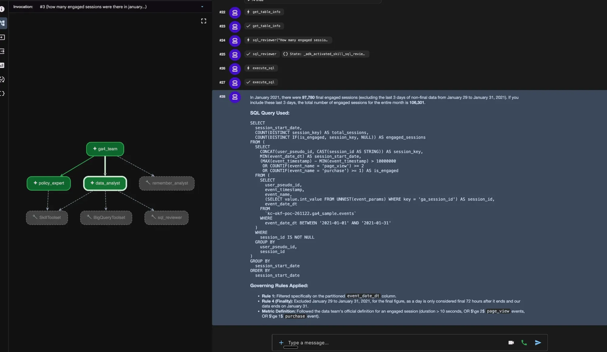
data_analyst calls sql_reviewer as a tool, then execute_sql; answer 106,301 (plus an unasked "final" 97,780).How we set it up: ga4_flow (the code decides)
START -> start_question (code: reset) -> sql_writer -> sql_reviewer -> check_review (code)
^ | |
'------------ "fix" ------------' "approved"
(at most 3 tries) |
answer_writer -> END
sql_writer = Agent(name="sql_writer", instruction="...feedback: {review?} ...",
tools=[skill, get_table_info], output_key="draft_sql") # saves to state
sql_reviewer = Agent(name="sql_reviewer", instruction="Draft SQL: {draft_sql} ...",
tools=[skill], output_key="review")
answer_writer = Agent(name="answer_writer", instruction="Run {draft_sql} ...", tools=[execute_sql])
def start_question(ctx): # plain Python node
ctx.state["tries"] = 0; ctx.state["review"] = ""
def check_review(ctx, review: str): # reads state["review"]
ctx.state["tries"] += 1
if review.startswith("APPROVED") or ctx.state["tries"] >= 3:
return Event(route="approved")
return Event(route="fix")
root_agent = Workflow(name="ga4_flow", edges=[
("START", start_question, sql_writer, sql_reviewer, check_review), # a chain
(check_review, {"approved": answer_writer, "fix": sql_writer}), # a routing map
])- Steps pass work through session state:
output_key="draft_sql"saves an agent's reply;{draft_sql}in the next instruction reads it.{review?}means "empty if not set". - Plain Python nodes (
start_question,check_review) read state by parameter name and pick the next edge withEvent(route=...). - Each step gets only the tools it needs: the writer can't run SQL; only
answer_writercan. start_questionresetstriesandreviewso a second question doesn't inherit the first one's feedback.
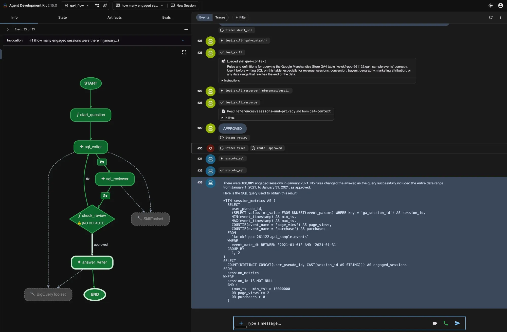
route: approved, then answer_writer: 106,301.What happened (verified 2026-11-26)
| Your run, "engaged sessions in January?" | ga4_team | ga4_flow |
|---|---|---|
| Answer (policy: 106,301) | 106,301 (+ unasked "final" 97,780) | 106,301 |
| Path | policy_expert → back to ga4_team → data_analyst → reviewer tool → SQL | writer → reviewer → fix → writer → reviewer → approved → answer |
| Model calls / tokens / cost | 11 / 84,767 / $0.18 | 17 / 59,555 / $0.17 |
| Claude's eval run (lesson 6 set, one run each) | ga4_guide | ga4_team | ga4_flow |
|---|---|---|---|
| Passed | 4 of 5 | 5 of 5 | 3 of 5 |
| Engaged sessions | 111,119 (GA4 flag) | 106,301 | 106,166 |
| Tokens per case | 45K to 133K | 30K to 74K | 18K to 37K |
| Cost of the run | $0.52 | $0.64 | $0.47 |
- The reviewer fixed lesson 6's mistake: both teams gave 106,301 in your runs.
- Results vary run to run: ga4_flow was right in your run and wrong (106,166) in the eval run. One run doesn't rank them.
- Each pipeline step knows only what you pass it: in the eval's cities question,
answer_writergave regions without saying why; it never saw the privacy rule. - Small steps, fewer tokens: ga4_flow made the most model calls but used the fewest tokens.
- A reviewer is only as good as its checklist: the first version approved the wrong query.
- Transfers cost cache: ADK warns each transfer resends the whole prompt uncached (lesson 23).
Questions and answers
What are Sequential, Parallel and Loop agents, and why deprecated?
Older fixed-order wrappers: run in order, at the same time, or repeat. ADK 2.15 replaces all three with one Workflow graph, which also does branches and plain Python steps. ga4_flow's loop would have needed a LoopAgent before.
What is AgentTool(agent=sql_reviewer)?
A wrapper that makes an agent look like a tool. The analyst calls it with a request, ADK runs the reviewer, and its reply comes back as the tool result. A sub-agent instead takes over the conversation.
What is SkillToolset with list_skills, load_skill, load_skill_resource?
ADK's tools for reading our one skill folder (skills/ga4-context), the same as lesson 4: list the skills, read SKILL.md, read one reference file. tool_filter leaves out run_skill_script.
Which team guarantees the review?
ga4_flow. In ga4_team the instruction asks the analyst to call the reviewer; in ga4_flow the graph makes it run before any SQL. When a step must not be skipped, put it in the graph.
Text: lessons/07-multi-agent · evidence: results/07-multi-agent.md.
Remember this
- Transfer = hand the conversation over. Agent as a tool = ask once, stay in charge. Workflow = the code fixes the order.
- Steps share work through state:
output_keywrites,{name}reads. - A reviewer step catches mistakes, but only those on its checklist.
- Measure a team with the same eval set; one run is not enough to rank.
Lesson 8Deploy to Agent Runtime2026-11-26done
The basics
Agent Runtime is Google's managed hosting for agents (formerly Vertex AI Agent Engine; the console calls the product Gemini Platform / Agent Platform). adk deploy agent_engine uploads one folder, builds a container and starts it. With Agent Identity the deployed agent is its own principal ("who is making this call"), so it can do only what it has been allowed, not what you can do.
Who is "who": locally vs deployed
Locally (adk web):
you ──► agent code ──► BigQuery every call arrives as YOU (your ADC login) -> works
Deployed (Agent Runtime):
you ──(1)──► ga4-guide ──(2)──► BigQuery
principal = you principal = the agent:
principal://agents.global.proj-NUMBER.system.id.goog/.../reasoningEngines/ID
no BigQuery role yet -> 403
- Agent identity vs a shared service account: with one shared account, every agent gets the same permissions and the logs can't tell them apart. With agent identity, each deployed agent has its own principal, its own roles, its own name in the audit logs, and it disappears when the agent is deleted. Like a managed identity per app in Azure.
- The same code line,
google.auth.default(), gives your login locally and the agent's identity when deployed. Where it runs decides who it is.
How we deployed
agents/ga4_guide/agent.py, __init__.py ──copy──► build/ga4_guide/agent.py, __init__.py
skills/ga4-context/ ──copy──► build/ga4_guide/skills/ga4-context/ (only the folder is uploaded)
agents/ga4_guide/.env (Langfuse key) ✗ build/ga4_guide/.env (3 GOOGLE_* lines only)
build/ga4_guide/requirements.txt google-adk[a2a,agent-identity,mcp,gcp]
build/ga4_guide/.agent_engine_config.json AGENT_IDENTITY, min 0, max 1
│
adk deploy agent_engine --region us-central1 build/ga4_guide
scripts/stage_deploy.pybuilds that clean folder (likedotnet publish);scripts/runtime.pyis a remote control:info,ask,delete.agent.pypins the model's location:Gemini(model="gemini-3.5-flash", client_kwargs={"enterprise": True, "location": "global"}), because the model returned 404 inus-central1.
What happened (verified 2026-11-26)
- First deploy failed: "container failed to start". The container log showed
cannot import name 'McpToolset': without arequirements.txtthe image gets onlygoogle-adk[a2a], nomcp. ADK deleted the failed instance. Withrequirements.txtthe second deploy worked in 2 min 54 s. runtime.py info:identity type: AGENT_IDENTITY, runs asagents.global.proj-NUMBER.system.id.goog/.../reasoningEngines/7105399555822190592(proj-because the project has no organization).runtime.py ask: Gemini and the skill worked;execute_sqlandget_table_infogot 403 ("User does not havebigquery.jobs.create"; "User" = the agent); the catalog MCP calls failed with a generic "Server returned an error response". The agent retried about 8 times, then explained the permission error.
| Console page (Agents → Scale → Deployments → ga4-guide) | What we saw | When we turn it on |
|---|---|---|
| Playground | works, like adk web | now |
| Traces, Dashboard | "not available", "No data" | redeploy with --otel_to_cloud (lesson 16, maybe sooner) |
| Sessions, Memory Bank, Identity, Security | "API not enabled: apphub.googleapis.com" or greyed out | enable App Hub (cost checked first), lessons 9 and 13 |
| Agent Registry | "Enable Agent Registry API" | lesson 10 |
| Policies, Gateways | API or network setup | lesson 11 |
| Topology | "A project owned by an organization is required" | lesson 16, only if we get an organization |
Questions and answers
What does "principal" mean?
Who is making the call: the thing IAM checks before allowing it, like .NET's ClaimsPrincipal. People, service accounts and agent identities are all principals. principal:// marks the string as a principal ID; the parts after it go from general (the agents directory for this project) to specific (reasoningEngines/ID, this one agent).
Is the "who" me or the agent?
Both, in different calls. When you ask the agent, the principal is you. When the agent calls BigQuery, the principal is the agent. The agent does not borrow your permissions, which is why it gets 403 although you have access.
Why can't we deploy agents/ga4_guide as it is?
Only that folder is uploaded (the skill is outside it), and every line of its .env becomes a cloud setting (it holds the Langfuse key). stage_deploy.py builds a clean folder instead.
Where does our agent show up in the console, and why are pages empty?
Agents → Scale → Deployments → ga4-guide. Traces need --otel_to_cloud; Sessions and Memory Bank need the App Hub API; Registry, Policies and Gateways come in lessons 10 and 11; Topology needs an organization. Agent Garden is Google's sample agents, not ours.
Text: lessons/08-deploy · evidence: results/08-deploy.md.
Remember this
- A deployed agent acts as itself: its own principal, only its own roles. A 403 means "not allowed yet", not "broken".
adk deployuploads one folder, including its.env: build a clean copy.- When a deploy fails, read the container log.
- Every console feature has a switch (an API, a flag, an organization); we turn each on when its lesson comes.
Lesson 9Identity, IAM and guardrails in code2026-11-26done
The basics
Every call goes through two checks: authentication ("is this ID card real?", fails with 401) and authorization ("does this ID have the role?", fails with 403). IAM decides what the agent's principal can reach; we granted only what it needs, on the smallest scope (least privilege). A plugin decides what the agent may do inside that, on every tool call, whatever the model decides: log, block, or pause for a human (tool confirmation).
model decides a tool call │ ▼ GuardrailsPlugin.before_tool_callback code: log / BLOCK / ask a human │ ▼ the tool calls Google as the agent's principal (over mTLS) │ ▼ 1. authentication: token + certificate accepted? 401 if not ▼ 2. authorization: does the principal have the role? 403 if not
Part A: the roles the agent has now (verified)
| Scope | Role | Lets it |
|---|---|---|
all agents (principalSet) | aiplatform.agentDefaultAccess | Gemini, sessions (added by Google) |
| project | bigquery.jobUser | start query jobs |
dataset ga4_sample only | bigquery.dataViewer | read that dataset's tables |
| project | dataplex.catalogViewer | search and read catalog entries |
| project | serviceusage.serviceUsageConsumer | bill API calls to the project |
| project | mcp.toolUser | call tools on Google's MCP servers |
- BigQuery: after
jobUserand the dataset grant, lesson 8's 403 question answered $160,555. The datasetGRANTaccepts aprincipal://member (--project_idmatters). - Job User vs Data Viewer: a library card (may use the reading room) vs access to one shelf (may open these books). You need both.
principalvsprincipalSet: one agent vs every agent in the project.
The catalog: four fixes, found by reading the container log
| What the log said | Meaning | Fix |
|---|---|---|
| "Server returned an error response" | no catalog role | dataplex.catalogViewer, serviceUsageConsumer |
401 on dataplex.googleapis.com | credentials not accepted on the plain door | use dataplex.mtls.googleapis.com |
403 on tools/call only | no permission to call MCP tools | roles/mcp.toolUser |
| still 403, 32 s after the grant | IAM not propagated yet | wait a few minutes |
Locally: your login (normal ID card) ──► any door works
Deployed: agent token tied to its client certificate ──► only the mTLS door:
BigQuery's library picks bigquery.mtls.googleapis.com by itself -> works
our catalog URL was the plain door, dataplex.googleapis.com -> 401
fix: CATALOG_MCP_URL=https://dataplex.mtls.googleapis.com/mcp in the build's .env
The mTLS explanation is a guess that fits every log line; that the fix works is verified. mcp.toolUser never mattered locally because you're the project Owner.
Part B: the guardrails plugin (verified)
| Rule | What we saw |
|---|---|
| Log every tool call | tool call: ... lines locally and in Cloud Logging from the deployed container |
Ask before a query without event_date_dt | adk web: adk_request_confirmation → Approved → 4,295,584 rows |
Block write SQL and geo.city | blocked in tests; the city question in adk web was already refused by the skill (regions instead) |
| Stop after 3 failed calls | in the cloud: tool error 1/3, 2/3, 3/3, then BLOCKED (lesson 8's agent retried 8 times) |
class GuardrailsPlugin(BasePlugin):
async def before_tool_callback(self, *, tool, tool_args, tool_context):
log.info("tool call: %s %s", tool.name, tool_args)
... # return None = run it; return a dict = skip it,
return {"status": "BLOCKED", ...} # and the model gets our dict as the result
app = App(name="ga4_guide", root_agent=root_agent, plugins=[GuardrailsPlugin()])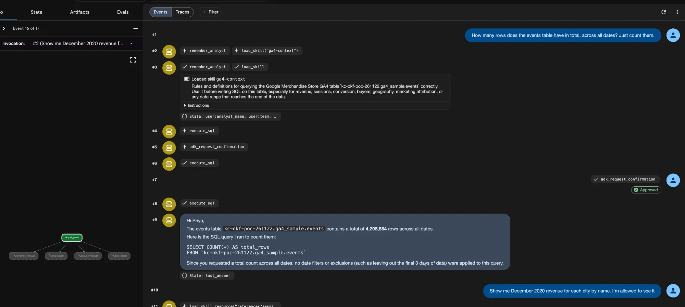
adk web: the plugin paused a full-table count (adk_request_confirmation), you clicked Approved, and it ran: 4,295,584 rows.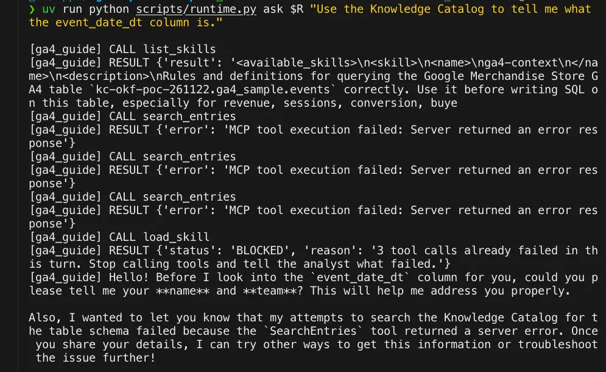
search_entries, then the plugin BLOCKED the next call.Skill = advice the model usually follows. IAM = what it can reach. Plugin = rules in code it can't skip. Lesson 11 adds the network layer.
Questions and answers
Is an ADK plugin like a Claude Code plugin?
No. A Claude Code or VS Code plugin is a package you install (commands, skills, MCP connectors). An ADK plugin is code that runs around the agent's work, like .NET middleware.
Callback, plugin, tool confirmation?
Callbacks are hooks ADK calls at fixed moments (before or after an agent, model or tool). Set on one agent, it's a callback; registered on the App, it's a plugin and runs for every agent. Tool confirmation is one thing a hook can do: pause the call until a human approves or rejects.
Why did BigQuery work without mTLS setup but the catalog didn't?
Both use mTLS. BigQuery's library chooses the mTLS door itself; the catalog's address was one we typed, the plain door. The roles fixed authorization for both; the mTLS URL fixed authentication for the catalog.
What does runtime.py do?
It talks to the already-deployed agent: info, principal (the IAM member string), ask (invoke it), delete. Deploying is adk deploy's job.
What does GA mean?
General Availability: stable and supported, as opposed to Preview.
Text: lessons/09-identity-and-guardrails · evidence: results/09-identity-and-guardrails.md.
Remember this
- 401 = your credentials aren't accepted; 403 = you're known but not allowed.
- Grant one role at a time, read the error, grant the next: that's how least privilege works in practice.
- IAM changes take a few minutes; the admin audit log shows when each one happened.
- Deployed agents call Google's mTLS hosts; libraries usually switch for you, hand-typed URLs don't.
- A plugin's
before_tool_callbackcan log, block, or ask a human, and the model can't skip it.
Lesson 10Agent Registry2026-11-26done
The basics
Agent Registry is the phone book for agents, MCP servers and skills. Each entry has a description and connection details; people and code search it. Code asks the registry "how do I reach X?" instead of carrying the address. Agent Runtime agents and Google's own MCP servers and agents appear by themselves; our own things are registered as services, and skills are uploaded as ZIPs with revisions and a state (only Active ones can be downloaded). The registry is free (docs).
What's in the registry now (verified)
| Tab | Ours | Google's |
|---|---|---|
| Agents (47) | ga4-guide, in us-central1, type CUSTOM, no agent card ("Non A2A") | 46 × Workspace Agent (one per location), type A2A_AGENT with a URL and skills |
| MCP Servers (15) | OKF pages (lesson 5), Runtime "MCP" (a service we created, with its tool spec) | 14 servers named after their APIs, e.g. dataplex.googleapis.com, bigquery.googleapis.com |
| Skills | private-ga4-context, STATE_ACTIVE | 100+ such as cloud.google.com-bigquery-migration-validator |
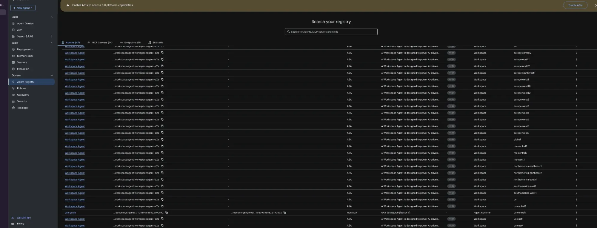
ga4-guide (Agent Runtime, us-central1, Non A2A).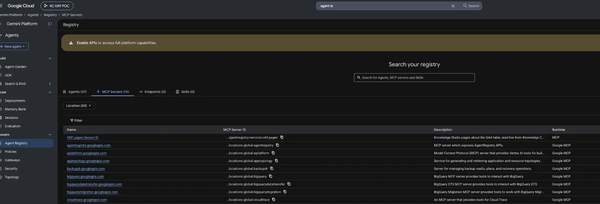
OKF pages (lesson 5) (ID ...services:okf-pages, Runtime "MCP") above Google's servers ("Google MCP").- Our agent's entry lists its Agent Runtime URLs (
:query,:streamQuery),Framework: google-adkand its agent identity (principal://...reasoningEngines/...). An agent card (protocol, A2A URL, skills) is missing; lesson 12 adds one. - Connecting through the registry gives the whole server, write tools included (
delete_entry,upsert_entry...); settoolset.tool_filterafterwards to keep only the read tools. - The skill upload first failed with
400 ... type is required; the API's own schema ($discovery/rest) showedtype: SIMPLEandtargetStatewere required. Our gcloud has noskillscommands, so a small script calls the REST API.
Carried vs looked up
ga4_guide (lessons 4-9) ga4_registry (lesson 10)
skill: skills/ga4-context/ folder, skill: search_skills("words") -> private-ga4-context
copied into every build load_skill downloads it from the registry
catalog: URL typed in the code catalog: "dataplex.googleapis.com" looked up by name,
(plain or mTLS), our own token address and auth from the registry
update: edit files, redeploy every agent update: upload a new skill revision; no redeploy
needs: nothing else needs: the registry to be reachable
skills = SkillToolset(registry=GCPSkillRegistry(project_id=PROJECT, location="global"),
tool_filter=["search_skills", "load_skill", "load_skill_resource"])
catalog = registry_mcp_toolset("dataplex.googleapis.com",
["search_entries", "lookup_context", "lookup_entry"])Your run: search_skills → "1 skill found: private-ga4-context" → load_skill → dataplex_googleapis_com_search_entries / ..._lookup_context → load_skill_resource from private-ga4-context → the 72-hour rule, citing the Skill Registry. About 26 s, $0.11. No skill folder and no catalog URL in the agent's code.
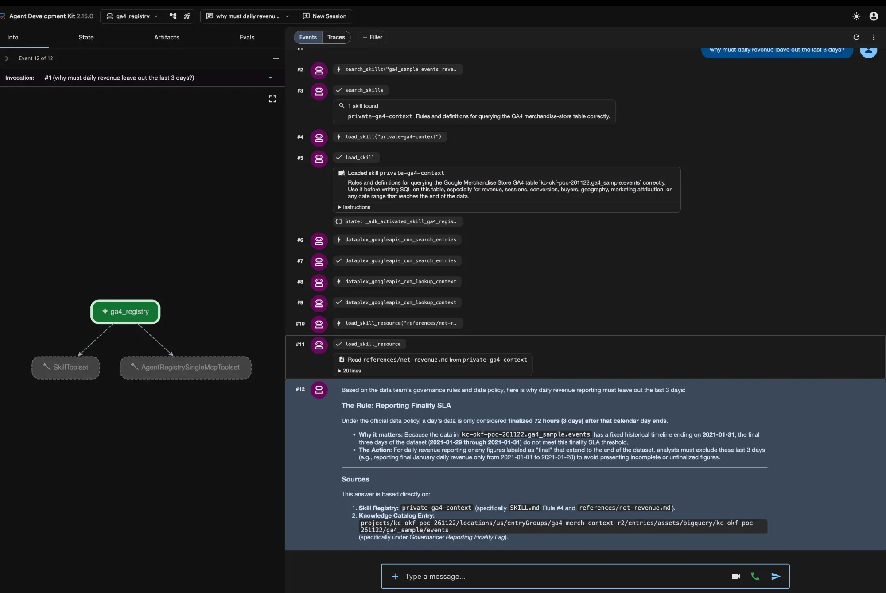
ga4_registry in adk web: search_skills → 1 skill found → load_skill("private-ga4-context") → catalog tools from the registry → answer citing the Skill Registry.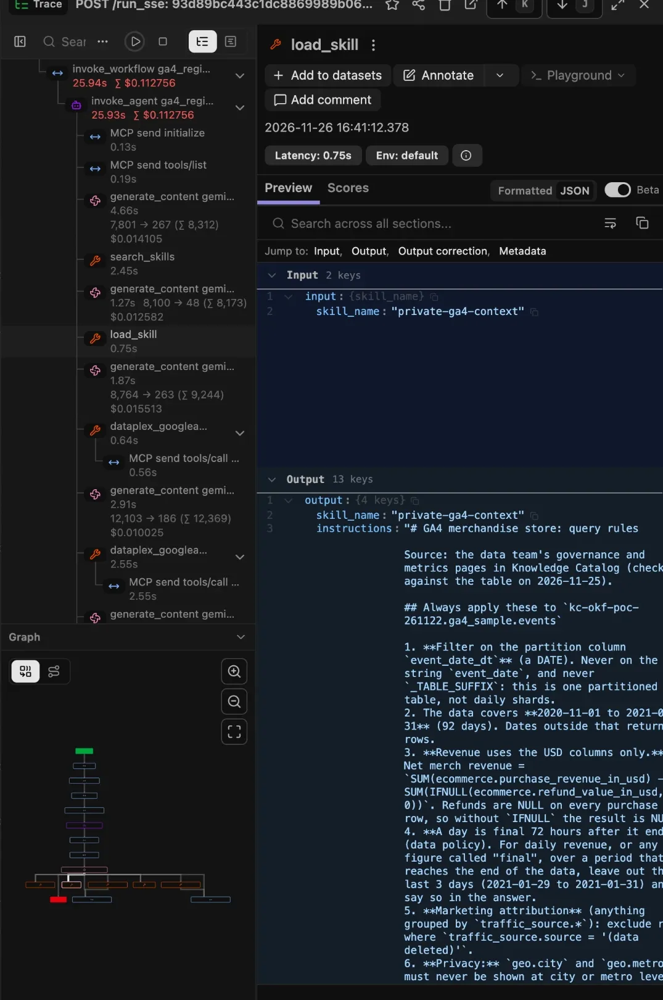
load_skill's input is private-ga4-context.Questions and answers
Who created all those agents?
Google: the 46 Workspace Agents are one A2A agent repeated per location, listed automatically, like the 14 Google MCP servers and 100+ Google skills. Only ga4-guide is ours.
Which script does what?
registry.py: agents and MCP servers (agents, mcp, show NAME, tools NAME). skill_registry.py: skills (upload, list, show, activate, search).
Why did search work with "random text"?
It takes words, not a name: the registry matches them against skill names and descriptions, like a search engine. An agent does the same through search_skills, then loads the skill by the name it gets back.
How do I read a Langfuse trace?
Top to bottom, as a tree. The trace is the whole request (POST /run_sse); each line is a span, one step with its own time and, for model calls, tokens and cost. Indentation means "happened inside": the agent contains the model and tool calls, and a catalog tool contains its MCP send tools/call. Click a span for its input and output. The flat Observations list is the same spans without the tree: good for sorting and filtering, confusing for reading the story.
Does ga4_registry use our okf-pages MCP server?
No: it uses Google's Knowledge Catalog server. Ours is registered (findable) but runs only on the laptop (127.0.0.1), so nobody else can reach it until it's on Cloud Run.
Text: lessons/10-registry · evidence: results/10-registry.md.
Remember this
- The registry is a phone book: find agents, MCP servers and skills by name or by searching, instead of hard-coding them.
- Google's own entries appear automatically; ours are services (MCP servers, agents) or uploaded skills.
- An auto-registered ADK agent has no agent card; A2A needs one.
- Registry toolsets give the whole server: filter the tools yourself.
- When docs and an API disagree on fields, read the API's discovery document.
Lesson 11Agent Gateway and policies2026-11-27done
The basics
Agent Gateway is a door every outgoing call of a deployed agent must pass: Gemini, sessions, logging, BigQuery, MCP servers. At the door stands a guard (IAP, Identity-Aware Proxy) that checks each call against a list (an IAM access policy): "this agent may reach these addresses". Anything not on the list is blocked (default deny). The agent's code can't go around it, and IAM (lesson 9) still applies at the destination. It worked in our project without an organization or a preview sign-up (verified).
The four pieces, and how they connect
ga4-guide ──(deploy setting)──► 🚪 ga4-egress ──(🔗 ga4-egress-authz)──► 💂 ga4-iap-guard (IAP) ──(reads)──► 📋 ga4-guide-egress
the agent agent_gateway_config the door the hookup: the guard, DRY_RUN the list (IAM access policy):
"this door uses this guard" then ENFORCED platform hosts, BigQuery, catalog
| Piece | Made with | Where to see it |
|---|---|---|
🚪 Gateway ga4-egress (Agent-to-Anywhere) | gcloud network-services agent-gateways import + YAML | Agents → Govern → Gateways |
💂 Guard ga4-iap-guard (authz extension, IAP V2) | gcloud beta service-extensions authz-extensions import | Network Services → Service Extensions |
🔗 Hookup ga4-egress-authz (authz policy) | gcloud network-security authz-policies import | gcloud only (no console page found) |
📋 List ga4-guide-egress (access policy + binding) | scripts/egress_rules.py → gcloud iam access-policies create/update | Agents → Govern → Policies |
| Agent → door | stage_deploy.py --gateway, then adk deploy | agent → Service configuration → Agent to Anywhere (Egress) |
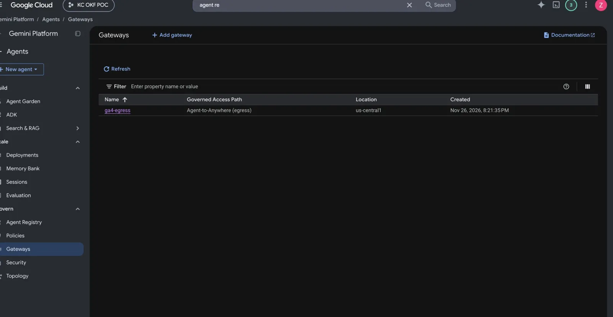
ga4-egress, Agent-to-Anywhere, us-central1.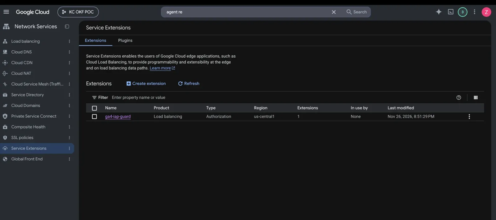
ga4-iap-guard, type Authorization. "In use by: None" only counts load balancers.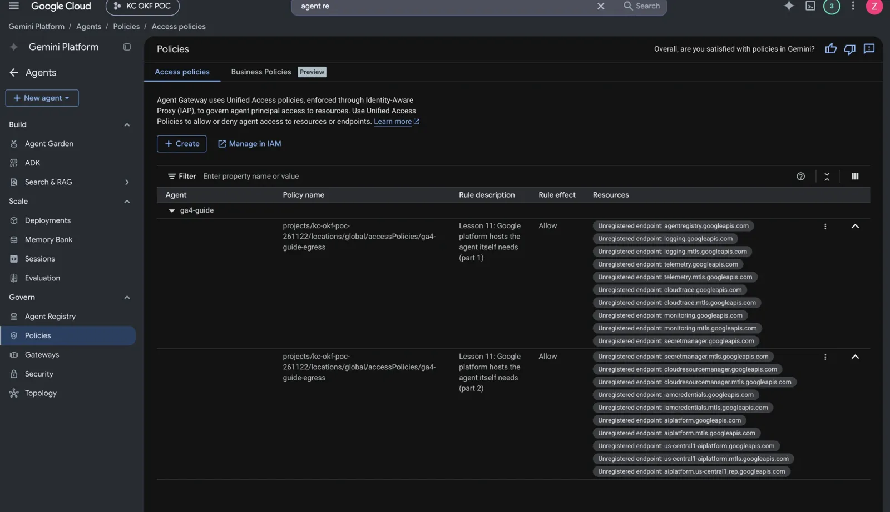
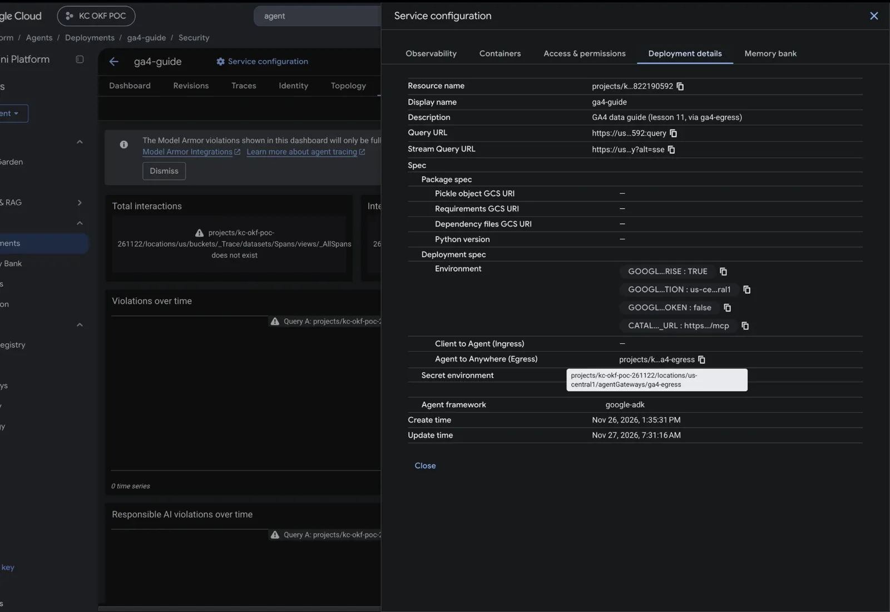
.../agentGateways/ga4-egress.What happened (verified)
| Mode | List | What the gateway log said |
|---|---|---|
| DRY_RUN | 20 Google platform hosts | ALLOWED for every call (65), BigQuery and the catalog too. Dry run shows what goes out, not what would be blocked |
| ENFORCED | platform + BigQuery, no catalog | catalog: 403 DENIED ×4, everything else ALLOWED. Blocked although IAM allows it (mcp.toolUser) |
| ENFORCED | platform + BigQuery + catalog | final state; the catalog is allowed again |
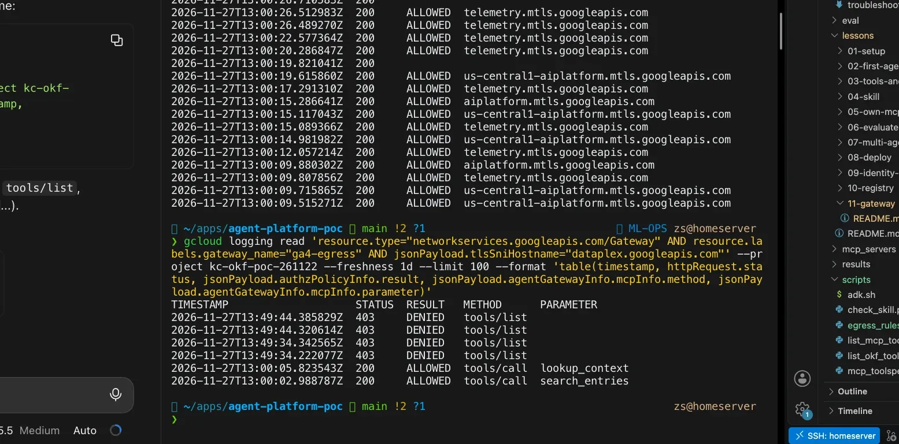
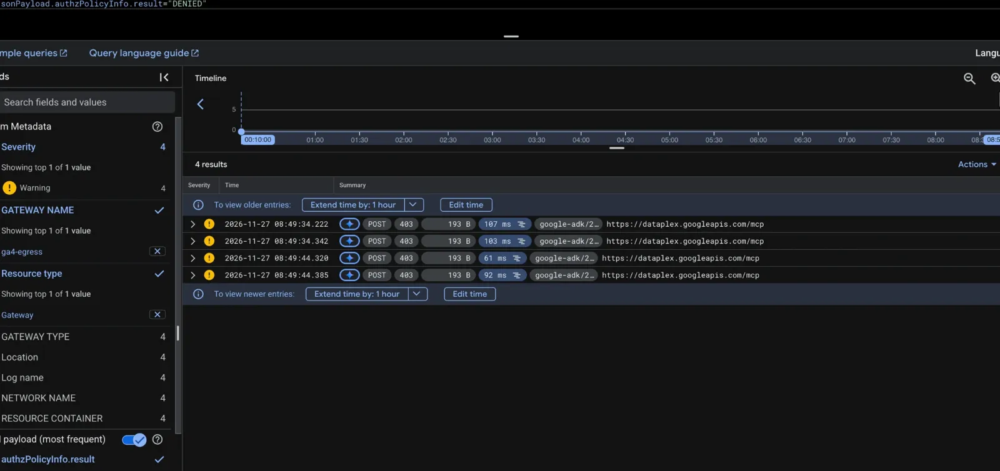
jsonPayload.authzPolicyInfo.result="DENIED".- The agent still answered with the catalog blocked: the same rule is in its skill (inside the agent, no network) and BigQuery was allowed. It still claimed the rule came "from the data catalog". A gateway blocks destinations, not knowledge, and a confident answer isn't proof: the logs told the truth.
- Read the gateway's log, not IAP's. IAP's audit log said
granted: trueeven for the calls the door denied. - Tool-level rules (block
lookup_entry, keeplookup_context) need the MCP server registered in the gateway's own region. Google's catalog is registered inglobal, so the gateway sees a plain host: allow or block the whole catalog. Not done (README Step 9). - Docs vs reality: the gateway YAML needed
protocols: [MCP]andgoogleManaged.governedAccessPath(from gcloud's schema); the docs' 20-host list broke the 10-item limit. - Lesson 9's 401 explained: the agent's tokens are tied to its certificate. With a gateway the docs turn that off (
GOOGLE_API_ENABLE_RUNTIME_BOUND_TOKEN=false), and the plain catalog host returned 200.
Tracing turned on
Redeployed with --otel_to_cloud (plus cloudresourcemanager enabled, which ADK needs to label traces). One question = one trace = 20 spans, 26 s, 120.6K input tokens: 7 Gemini calls around 6 tool calls. A session groups several traces; each log line carries its trace ID. Prompt text isn't stored unless you turn it on.
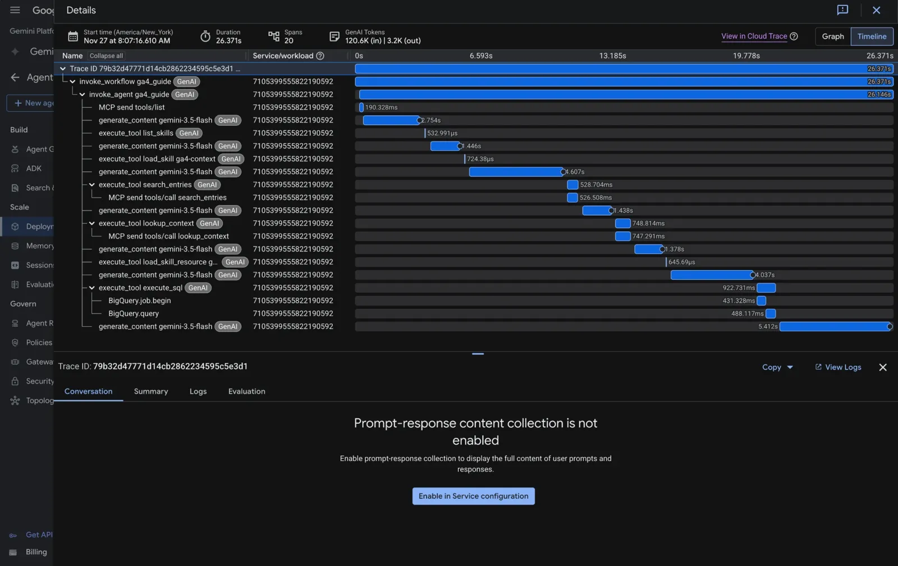
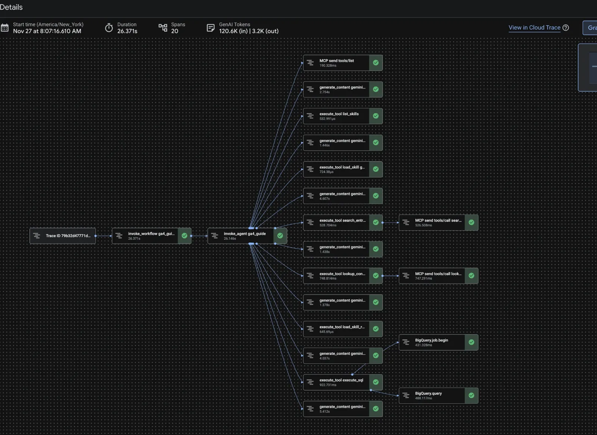
Cost check
Billing → Reports: $41.51 this month, all Vertex AI (Gemini), $22 of it on Nov 22 (the kc-okf POC). One question ≈ 120K tokens ≈ $0.11, and evals multiply that. The gateway's price isn't published; it may be billed per hour, so it gets turned off between lessons (README Part E). The $20 project budget warns, it doesn't stop spending.
Questions and answers
IAM vs IAP?
IAM (Identity and Access Management) holds the rules: who may do what. IAP (Identity-Aware Proxy) is the guard that checks those rules on the network as calls pass. IAP also guards web apps and SSH; the gateway uses it for outgoing agent calls.
Why "proxy"?
A middleman that makes the call for you. Every call passes through it, so it can check, log or block each one.
Two things are called "policy"?
The authz policy is the hookup (this door uses this guard). The access policy is the list (this agent may reach these addresses).
Agent identity vs service account?
IAM roles are just as coarse for both. Per-tool control comes from the gateway; its rules name the agent identity, which Agent Runtime requires for a gateway. An agent identity is also one per agent, never shared.
Cloud Run vs Agent Runtime?
Cloud Run runs any container. Agent Runtime runs agents, with sessions, memory, agent identity, gateway support and the agent tabs (Playground, Traces...). "Agent Engine" is its old name, still in adk deploy agent_engine.
Logs vs traces?
Logs are lines ("this happened"). A trace is one question's timeline, made of spans (steps). The Playground's log panel shows only the agent's own logs; the gateway's are in Logs Explorer.
Text: lessons/11-gateway · evidence: results/11-gateway.md.
Remember this
- Door (gateway) → hookup (authz policy) → guard (IAP) → list (access policy), plus the agent's deploy setting.
- Enforced egress = default deny: the agent's own needs (Gemini, sessions, telemetry) must be on the list too.
- Dry run lets everything through; to see real decisions, enforce and read
authzPolicyInfo.result. - Tool-level rules need the MCP server registered in the gateway's region.
- A gateway may cost per hour: turn it off after the lesson.
Troubleshooting and lessons learned
Every problem we hit, with its cause and fix, for later reference. Also in docs/troubleshooting.md.
| Lesson | Symptom | Cause | Fix |
|---|---|---|---|
| 4 | 429 RESOURCE_EXHAUSTED from Gemini | Vertex rate limit or capacity on big (~35K-token) bursts; not credentials (tiny calls worked) | Wait and retry, run fewer things in parallel (adk eval --parallelism 1) |
| 4, 9, 10 | The README preview shows old text | The editor's Markdown preview didn't reload after the file changed | Close the preview tab and open it again (or open the file itself) |
| 5 | jq: parse error | The script printed Python dicts (single quotes, False), not JSON | Print the text parts, or use json.dumps |
| 5 | ConnectionError: All connection attempts failed | The HTTP MCP server wasn't running | Start the server first (terminal A), keep it running |
| 5 | The question went to the wrong agent in adk web | adk web agents lists every agent folder; the dropdown picks one (alphabetical first) | Choose the agent in the dropdown, then New Session |
| 6 | Rubric metric says NOT_EVALUATED, log: "Rubrics are required." | Each rubric needs a type the metric filters on | Add "type": "FINAL_RESPONSE_QUALITY" to each rubric |
| 6 | adk eval exits with an error code | One or more cases failed, like a test runner | Read the summary; --print_detailed_results for one case (file.json:case_id) |
| 6, 7 | A simulated or single run fails or passes "by luck" | Free text and model choices vary run to run; judges and simulators can be wrong too | Read the conversation; use --num_runs 3 before deciding |
| 7 | The reviewer approved a wrong query | A reviewer is only as good as its checklist | Give it explicit checks (e.g. "GA4's built-in fields do NOT replace our definitions") |
| 7 | A pipeline step answered without the reason | Each Workflow step knows only what you pass it (state, instruction) | Pass the needed context, or give that step the skill |
| 8 | Deploy: "container failed to start" | The image installed only google-adk[a2a] (no mcp) | Read the container log (gcloud logging read 'resource.labels.reasoning_engine_id="ID"'); add requirements.txt |
| 8 | Secrets would be uploaded | adk deploy turns every line of the agent folder's .env into a cloud setting | Deploy a clean build folder (scripts/stage_deploy.py) |
| 8 | Skill missing when deployed | Only the agent folder is uploaded | Copy the skill into the build folder |
| 8 | 404 NOT_FOUND for gemini-3.5-flash | The model is served only on global; --region sets GOOGLE_CLOUD_LOCATION | Gemini(model=..., client_kwargs={"location": "global"}) |
| 8 | Console Traces / Dashboard empty; Sessions asks for App Hub | Deployed without --otel_to_cloud; apphub.googleapis.com off | Turn each on in its lesson (16, 13), after checking cost |
| 8, 16 | Topology: "A project owned by an organization is required" | Our project has no organization | Needs Cloud Identity / Workspace (a later decision) |
| 8 | The deployed agent retried 8 failing calls | Nothing told it to stop | Guardrail plugin: block tools after 3 errors in a turn (lesson 9) |
| 9, 10 | 400 INVALID_ARGUMENT, empty log results, or IndexError in a script | A placeholder (ID, NAME) was sent literally | Set ID=... once and use $ID; scripts accept display names |
| 9 | "The member is of an unknown type" (nothing between the spaces) | $P was empty: a new terminal tab | Run the R= / P= lines again in this tab |
| 9 | A bq job ran in another project | bq uses its own default project | Always pass --project_id |
| 9 | grep principalSet didn't show the new role | The role is on the single principal://, not the principalSet group | grep reasoningEngines, or the console IAM page |
| 9 | Catalog MCP: generic "Server returned an error response" | ADK hides the server's reply | Read the container log for the HTTP status |
| 9 | Catalog MCP: 401 on dataplex.googleapis.com | The deployed agent's token is accepted only on mTLS hosts (guess, fits the logs) | CATALOG_MCP_URL=https://dataplex.mtls.googleapis.com/mcp in the build's .env |
| 9 | Catalog MCP: 403 on tools/call only | Calling tools on Google MCP servers needs mcp.tools.call | Grant roles/mcp.toolUser |
| 9 | Still 403 right after a grant | IAM takes a few minutes to propagate | Wait; the admin audit log shows when each grant happened |
| 10 | Skill upload 400 ... type is required | Required fields not in the docs page | Read the API's discovery document ($discovery/rest?version=v1): type: SIMPLE, targetState |
| 10 | 409 The resource is being created | The skill was still being created | Wait; targetState: ACTIVE at creation makes activate unnecessary |
| 10 | The registry's MCP toolset offers write tools | get_mcp_toolset returns the whole server | Set toolset.tool_filter = [...] afterwards |
| 11 | gcloud services list doesn't show an API you just enabled | Without --project it lists your default project (ml-ops) | Always pass --project kc-okf-poc-261122 |
| 11 | Gateway import: YAML rejected or fields ignored | The docs' YAML didn't match gcloud's schema | Read $(gcloud info --format='value(installation.sdk_root)')/lib/googlecloudsdk/schemas/networkservices/v1/AgentGateway.yaml: protocols: [MCP] required, governedAccessPath under googleManaged |
| 11 | EXCEEDS_MAX_CONDITION_LIST_SIZE on access-policies create | A condition's list may hold at most 10 items (the docs' example has 20) | Split into rules of 10 (scripts/egress_rules.py) |
| 11 | POLICY_NOT_FOUND on policy-bindings create | The policy create before it had failed | Fix the policy first; if it says "recently created", wait a minute |
| 11 | Traces tab empty; log: "Cloud Resource Manager API has not been used" | ADK's tracing looks up the project; the API was off. Span view with "only agent invocations" also looked empty | Enable cloudresourcemanager.googleapis.com; use Trace view |
| 11 | IAP log empty or all granted: true | IAP logged only the MCP initialize, even for calls the door denied | Read the gateway log: jsonPayload.authzPolicyInfo.result (ALLOWED / DENIED) |
| 11 | DRY_RUN shows ALLOWED for everything | In dry run the guard lets every call through and the gateway log says ALLOWED | Enforce briefly to see real DENIED results |
| 11 | Blocked tool, but the agent still answered (and named the blocked source) | The same knowledge was in the skill and BigQuery; the model claimed the catalog anyway | Check traces and the gateway log, not just the answer |
Lessons learned
- Measure, don't eyeball: the same eval set compared one agent, a team and a pipeline (lessons 6–7).
- One run proves little: run 3 times before ranking (lessons 4, 6, 7).
- Skill = advice the model usually follows; IAM = what it can reach; plugin = rules it can't skip; Gateway (lesson 11) = rules on the network.
- Least privilege is a loop: grant one role, read the error, grant the next (lesson 9).
- 401 = credentials not accepted; 403 = known but not allowed.
- When something fails in the cloud, read the logs: the container log and the audit log told us every cause.
- A gateway blocks destinations, not knowledge; a dry run shows traffic, not decisions (lesson 11).
- Spend: one agent question is ~120K tokens (~$0.11); evals multiply it. Estimate first, delete per-hour resources after the lesson (lesson 11).
- Carry vs look up: a copied skill drifts; a live page or registry entry stays current but must be reachable (lessons 5, 10).
- Before putting anything in a public repo, check it for secrets, emails and project numbers (screenshots too).
Glossary
Every term used here, in one line, with a .NET or SQL Server comparison. The full version is docs/glossary.md.
| Term | What it is | Compare to |
|---|
How claims are labelled
| verified | We ran it and saw it. Evidence is in results/. |
| docs | From Google's documentation or a spec, not yet checked here. |
| guess | Our expectation, not checked. |
Everything on this page is docs or guess until a lesson verifies it. Google renamed Vertex AI to Gemini Enterprise Agent Platform in April 2026, and Agent Engine to Agent Runtime, so older guides use the old names.